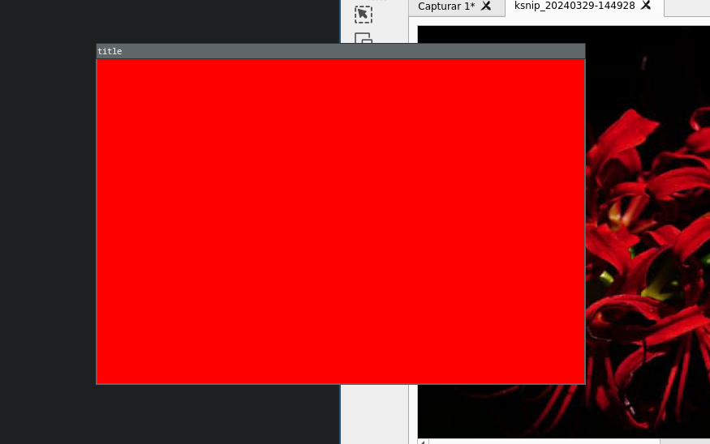

He estado experimentando más con SDL2. Parece ser más sencillo de lo que puede llegar a aparentar.
Sin embargo, me he percatado también de la increíblemente amplia gama de herramientas con las que cuenta.
Es por esto mismo que estaré tratando de familiarizarme más con las bibliotecas.
Ahora bien, tan solo me he aproximado a la superficie. Y hasta ahora tan solo he completado algo parecido a un "hola mundo".
Estoy muy justo de tiempo, por lo cual los avances que podré hacer en estos días no serán muchos.
Aquí tengo un enlace al repositorio donde estaré guardando mi progreso.
EnlaceAsí como una captura de pantalla, en la cual muestro el pequeño avance de hoy.
Esto sería todo por hoy.